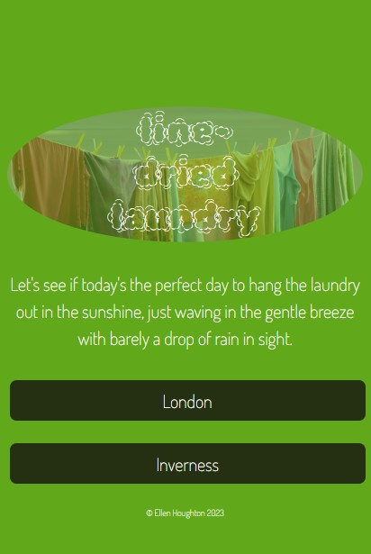
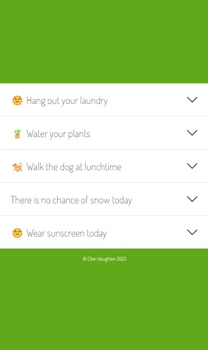
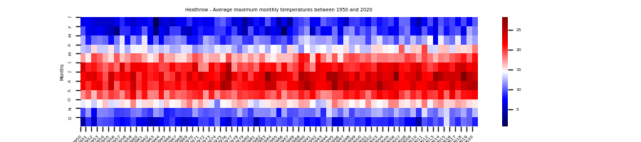
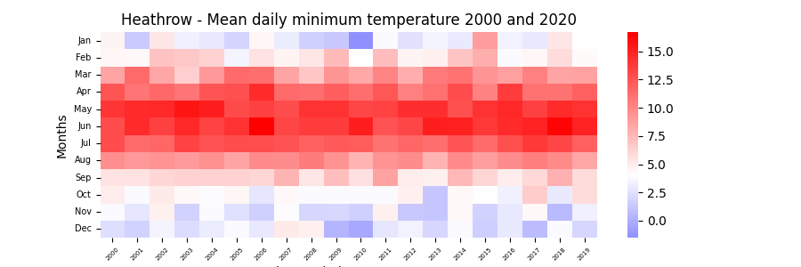
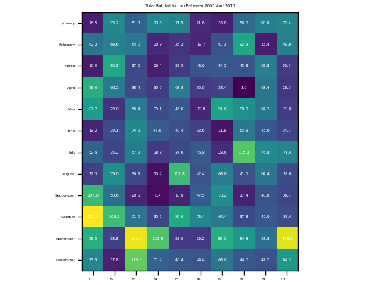

Ellen Houghton
Projects on Github
This project connects to a MET office API and creates an object with the retrieved data.
 
This project uses data downloaded from MET office into pandas to create heatmaps using Matplotlib, NumPy & Seaborn libraries.

A heatmap to show 70 years of weather data, displaying the mean daily max temperature at Heathrow Airport.

A heatmap to show 20 years of weather data, displaying the mean daily min temperature at Heathrow Airport.

A heatmap to show 10 years of weather data, displaying the total rainfall in mm at Heathrow Airport.
This project takes user input, connects to the Azure API to identify the language of the input and translate into 5 given languages; spanish, dutch, french, german & english.
This project will allow users to input text data about symptoms which is time-stamped and stored, then will use a metaprompt as a prefix to send the data to an AI API in order to create a short summary of the data/ symptoms which can be given to a GP or VET in a brief 10-minute appointment.
This project uses a score object to create a yahtze score which is then used within a game of yahtzee played with a computer at the command line.

I started coding during the pandemic and I have been coding small projects for fun with my 2 children.